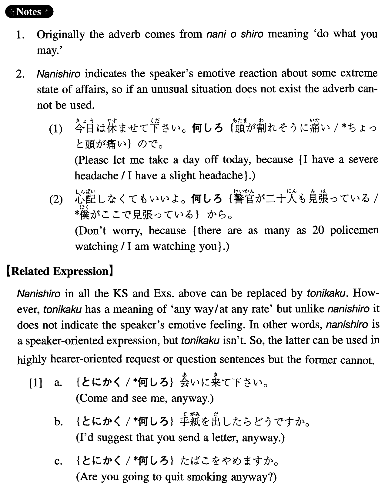

何しろ (I. 216)
- (ksa).
- うちの父は頑固なんだ。何しろ一度言い出したら絶対に引き下がらないんだから。
- My father is obstinate. As a matter of fact, once he says he will do something, he never changes his mind.
- (ksb).
- Ａ：この大学の教育はいいらしいね。Ｂ：うん、何しろ学生六人に先生一人だからね。
- A: I heard that education at this college is good. B: Yeah, you may be surprised, but the student-instructor ratio is 6 to 1.
- (ksc).
- 一日中ボスにがなり立てられるんで、何しろ、ストレスが多いんだ。
- Because my boss hollers at me all day long, I'm unbelievably stressed.
- (a).
- あの人は金持ちですよ。何しろベンツを三台も持っているんですからね。
- He is rich, you know. Believe it or not, he has three Mercedes Benz.
- (b).
- 今年の冬は本当に雪が多かったです。何しろ、雪の降らない日の方が少ないくらいでしたからね。
- It snowed a lot this winter. In fact, there were less snow-free days than snowy days, you know.
- (c).
- あの人はよく煙草を吸いますよ。何しろ一日に六十本ぐらい吸うんですから。
- He is a heavy smoker. In fact, he smokes about 60 cigarettes a day.
- (d).
- A: 日本は人が多いねえ。B: うん、何しろ、面積はアメリカの二十五分の一なのに、人口は二分一だからね。
- A: Japan is crowded, isn't it? B: Yeah, as a matter of fact, the size is one twenty fifth of America but the population is one half, you know.
- (e).
- 何しろ、忙しいんだ。寝る時間もないんですよ。
- I'm unbelievably busy. I don't have any sleeping time, you know.
